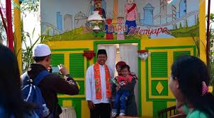
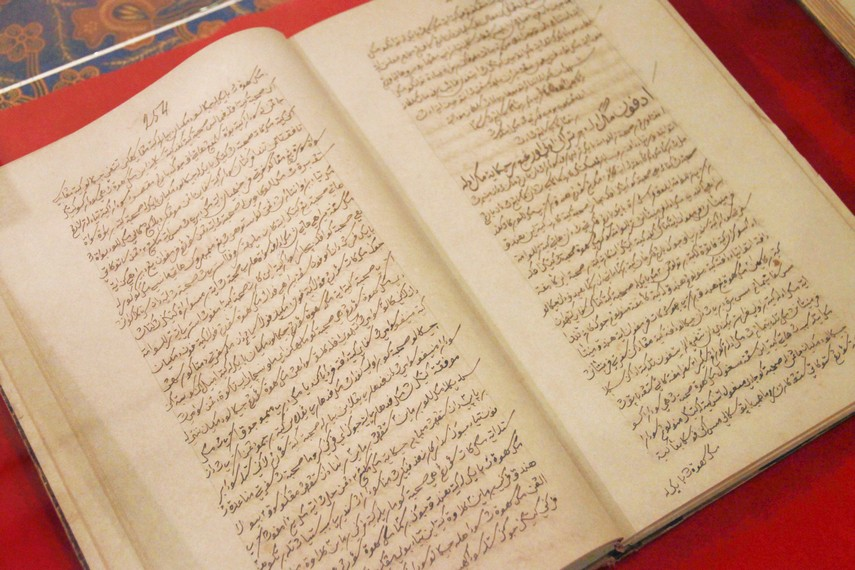

Selamat Datang di Kebudayaan DKI Jakarta
Daerah Khusus Ibukota Jakarta atau DKI Jakarta, sebelumnya dikenal sebagai Batavia, adalah ibu kota Indonesia dan sekaligus daerah otonom setingkat provinsi. Jakarta memiliki lima kota administrasi dan satu kabupaten administrasi. Sementara menurut pengertian secara umum, Jakarta merupakan kota metropolitan. Jakarta terletak di pesisir bagian barat laut Pulau Jawa. Jakarta juga mempunyai julukan The Big Durian karena dianggap kota yang sebanding dengan Kota New York (Big Apple) di Amerika Serikat. kunjungi untuk detailnya.
Adat Istiadat
1. Bikin Rume
Ritual ini dilakukan sebelum membangun rumah untuk menentukan tata letak rumah sesuai dengan feng shui.
Tradisi
1. Nyorong
Nyorog merupakan tradisi membawakan makanan oleh orang yang lebih muda ke rumah saudaranya yang lebih tua atau dituakan. Nyorog sendiri merupakan bahasa Betawi yang artinya menghantar. Tradisi
Seni
1. Seni Sastra
Sastra Betawi adalah sebuah karya sastra berupa tulisan, yang menggunakan bahasa Betawi. Karya sastra Betawi adalah kesenian yang dibuat dan disampaikan juga oleh orang Betawi. Penyampaian dari kesenian Betawi ini juga disampaikan dalam bahasa Betawi.
Bahasa
Bahasa Betawi
Bahasa Betawi (basé Betawi, basa Betawi; dikenal juga sebagai bahasa Melayu Betawi) adalah bahasa kreol yang dituturkan oleh suku Betawi yang mendiami daerah Jakarta dan sekitarnya. Bahasa ini merupakan bahasa Melayu Pasar yang bercampur dengan bahasa asing, seperti; Belanda, Portugis, Arab, Persia, Hokkien, dan juga bahasa pribumi Indonesia seperti Sunda, Jawa, dan Bali; imbas para imigran dan pekerja multietnis yang didatangkan dari berbagai tempat ke Batavia oleh VOC pada abad ke-16 hingga abad ke-18, serta perdagangan dan pertukaran yang terjadi sejak ratusan tahun di bandar besar Sunda Kalapa."
Nilai-Nilai Budaya
1. Gotong Royong
Budaya gotong royong sangat kuat dalam masyarakat Betawi. Mereka selalu saling membantu dalam berbagai kegiatan, seperti membangun rumah atau mengadakan acara.